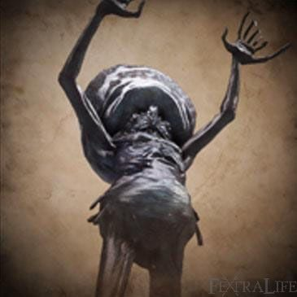

Celestial Emissary |
|||
|---|---|---|---|
|  | |||
| General Info | |||
 |
 |
Location | Drops |
| 2764 | 24640 | Upper Cathedral Ward | Communion |
| 10876 | 70303 | Great Isz Chalice | Arcane Damp Blood Gem (6) |
| Defenses | |||
 |
 |
 |
-- |
| 235 | 261 | 26 | -- |
 |
 |
 |
 |
| 131 | 170 | 60 | 55 |
 |
 |
 |
 |
| 300 | 180 | No | Yes |
Celestial Emissary (星界からの使者 Seikai kara no Shisha lit. "Emissary of the Astral world") is an optional Great One Boss and Chalice Dungeon Boss in Bloodborne.
Celestial Emissary Information
- During this fight we see a crowd of Celestial Mob with the Celestial Emissary boss (which looks exactly like the other Celestials) hiding between them. While the other Celestial Mobs are hostile and chase the player, the Celestial Emissary stays back, giving the player a way to recognize him. An easy way to pick out the Emissary in a group is that he will have no life bar above his head when struck.
- Gain 0 Insight for finding the boss and 2 Insight for killing it.
Drops
- Blood Echoes: NG (24,640), NG+ (92,848), NG++ (102,133), NG+3 (116,060). NG+7 and so on (232,120)
[no NG+6 source to cross reference] - Communion
- Arcane Damp Blood Gem (6) (when fought in Great Isz Chalice)
Location
- In the Orphanage, in Upper Cathedral Ward (requires Orphanage Key dropped from enemy).
- Great Isz Chalice (Layer 2)
Combat Information
- Vulnerable to Bolt, then Fire
- This boss fight has 3 phases:
- At the beginning of the fight there will simply be lots of Celestial Mobs trying to attack you.
- After he has lost 50% of his HP, the Celestial Emissary grows in size and acquires new attacks.
- Around the 25% HP mark, he will start growing tentacles in his head, similar to the Celestial Mobs that hurl arcane projectiles toward the player (note: this variant of Celestial Mob is not present in this boss fight).
- Celestial Mobs will keep spawning as long as the boss is alive and every Celestial Mob left will die instantly when the boss dies.
- In the Great Isz Chalice version the boss is more aggressive before the transformation and will hound the player. There are no extra enemies so it is easier to focus on the boss and dodge his attacks. After the transformation he may use his Cosmic Barrage attack if you back up to a medium to long range distance. Dodge his Cosmic Barrage either by sprinting in a circle or hiding behind the the convenient pillar placed in the middle of the room. All his moves except for the sudden Quad Stomp, and slightly quick Penta-Rush, are heavily telegraphed and are incredibly easy to dodge. Stay behind him when possible and shave off his health.
- A particularly easy strategy is just to get him to transform into the larger form and poison him and run to the higher area to take on the smaller mobs
| Attack Name | Attack Description & Counter |
|---|---|
| Quad Stomp | A series of four stomps with a very short telegraph. Stomp order goes: Left Leg, Right Leg, Right Leg, Left Leg |
| Torso Drop | Reaches into the air before dropping his body and arms on the player |
| Swipes (Can do 1, 2, or 3 hits) | Heavily telegraphed arms swipes. Attack order is: Right arm, left arm, then Torso Drop |
| Cosmic Barrage (Transformation) | Upon his transformation he will sprout blue tentacles from his head and will from time to time (and depending on distance) emit a bright, blue aura of cosmic energy from his head and unleash 6 quick cosmic lasers on your current location |
| Penta-Rush | A quick 5-hit series of arm swipes with a small telegraph time. Attack order: Right arm, left arm, right arm, left arm, quick pause, right arm |
Strategies
- You should pinpoint the correct alien at the beginning and focus on him. On his last phase, you need to stay close to him so that he won't cast his laser spell at you as it is very strong. A good way to avoid it is by standing behind a pillar while killing the mob.
- It is possible to one shot this boss. During the transformation animation, get behind it and land a charged attack followed by a visceral attack.
- Control the horde that is running to you by using wide range attacks (e.g. R2 of the blade of mercy, which can hit 5-6 of them in one swing). Be patient and chip him away, he does not have that much HP.
- A leveled-up Tonitrus can get him into his second phase with two well timed combos. Trick the weapon, clear out the mobs and then attack him mercilessly.
- You get ~6 seconds to attack the boss if you can clear out the mob entirely before they respawn.
Videos
(( Please respect these video posting guidelines))
Notes & Trivia
- Shaman bone works in this boss fight, and will cause Celestial Mobs to attack the boss.
 Anonymous
AnonymousI used a +10 Reiterpallasch with Bolt Paper and jabbed the dude to death before he could transform
- Anonymous
every fromsoftware game has to have that one really easy boss. it's just an unspoken rule at this point
- Anonymous
Fully charged Ludwig's Holy Blade at +10 will do half his health. It's pretty funny.
- Anonymous
As the guide said i should walk up the stairs before the bossfight, and dis not mention the lever that opens a gate straight to a lamp, i had to do quite a long and unecessary run-around because i did’nt want to engage the boss at that time
They dropped a blood rock when I fought them for the first time in FRC Isz chalice. I said "whoa".
is 26 def the lowest of any boss? I've never seen another boss have defenses lower than 50 for any damage type lmao
- Anonymous
This boss is not located in the Orphanage. It's an understandable mistake, especially from a progression standpoint. But, the Orphanage is actually the building that serves as the main area of Upper Cathedral Ward. The Orphanage Key opens the front door to that building, after all. If you read the item description of the Orphanage Key, it tells that it was a place of education and research, where orphans were raised to be scholars and researchers. So this boss takes place in the Lumenflower Gardens, which are not to be confused with the Orphanage (or, for that matter, with the Lumenwood Gardens).
- Anonymous
- Anonymous
You literally don't need a strat for this... This boss is easier to kill than the leech warlocks guarding it
- Anonymous
Is no one gonna mention the fact that it's an orphanage and it's been shown in Iosefka's clinic that they're humans who were experimented on? We're killing small children people. But what are they gonna do? Tell their parents?
- Anonymous
You know, he's actually pretty tough until you- oh never mind I accidentally killed him while typing this
- Anonymous
- Anonymous
I was listening to music and coincidentally The Mob Rules came on when I started this fight
- Anonymous
The reason my bolt weapon is the cane. Not the boss per se, but the Rogers that love to swarm you. Happens in Isz often as well. The cane does good damage with good crowd control, and can outspace anything this boss will throw. I recommend using it even without bolt
- Anonymous
Good god, I died twice to this guy!! The third time I did it, all I had to do was have his minions chase me up the stairs for the first half, then again the second half, while using Tonitrus. The guy went down like a chump and now I feel like a dumbass XD
- Anonymous
Take sip of lead elixir and just stand there whacking the dude down
- Anonymous
- Anonymous
- Anonymous
4-5 shots from tiny tonitrus will annihilate him from a distance
- Anonymous
this was probably the easiest fight I've had in any soulsborne game. Just used my fire hunter axe+6 to whittle away at the boss's health, and then when he begins transforming, two charged hits from my Holy Blade+8, and the fight was over. sort of dissapointed i didnt really get to see all the phases since i beat it first try
- Anonymous
So did I understand that right that this thing was the master project they hoped would help them making contact with the great ones?
- Anonymous
Just because this boss isn't hard to kill, don't forget that Celestial Emissarys hit like a truck,
- Anonymous
I want to believe.... that somewhere in Isz, you can find a wandering giant Celestial Emissary.... So far no evidence, but the truth is out there.
- Anonymous
- Anonymous
I kill him at fist try (alone) and without too much difficult.
I've not finished the game yet but this is the easiest boss as now, the one after that is way more difficult
- Anonymous
beast blood pellet hit his mob to get max beasthood than just beat lliving crap of the boss
- Anonymous
- Anonymous
Ayy lmao?
I don't get it, would someone explain this?
I thought I'd be able to find the explanation beyond "lol memes", but that is all I've been able to find.
- Anonymous
Threaded Cane makes this a cakewalk, no different from clearing trash.
- Anonymous
The difference of difficulty between this boss and the one following after it is ridiculous lmao it gives us a hope thinking that we are actually good
- Anonymous
Using a charged attack with the 2H hunter axe cuts the little guys down like a lawnmower. Solid fun.
- Anonymous
I'll be honest i always struggle with this boss compared to fhe others i just get swarmed and stuck +alot of their magic actually oneshots me. Maybe my health os too low or something but i alwayd get 1-2hit killed by progectiles and swarmed and stunned
- Anonymous
I didn't realize until recently that it has the ability to buff all of its allies. I usually kill it too soon for it to happen, but I was goofing around and it suddenly raised its hands to its face as if it was praying, then raised them over its head, and a massive blue corona spread throughout the arena, granting all of the surviving mob severely boosted offense and defense. The eyes of the affected allies started to glow more brightly, almost like an enemy that has stolen your blood echoes, except the color was different. I think its health has to be at 25% for this to happen, and I'm pretty sure the buff lasts as long as the affected enemies remain alive, and any replacements that spawn later will go back to being pathetically easy to kill.
Maybe it isn't new knowledge, but I don't think I see it mentioned anywhere on this page? The boss actually almost killed me that time, lol.
- Anonymous
I died twice to this guy. Should I should just let Gehrman kill me at the end.
- Anonymous
Best way to kill the Celestial Emissary:
1: Go into the swarm and quickly identify the boss; he'll be the one without a health bar over his head.
2: Kite the swarm away, and rush him. Use a Shaman Bone Blade on him.
3: Dodge away, and let the swarm attack him.
4: To make it more brutal, be behind him and use any weapon with an R2 thrust.
- Anonymous
- Anonymous
I took the time to piece together whatever amount of "lore" I could for this boss, mainly because most things I've seen are just mocking how easy it is to beat this boss.It says in the Orphanage Key description (which the fight takes place in) that the Orphanage is where the Choir was thought up, and that it turned orphans into members of the Healing Church's "think tank," likely in the hopes of coming up with solutions to the scourge and blood evolution.This may not be worth saying, but I would also like to point out that it was "shadowed" by the Healing Church, which in the context could be defined as:1. "accompany (someone) in their daily activities at work in order to gain experience at or insight into a job"2. "follow and observe (someone) closely and typically secretly"Meaning that the Church presented the Orphanage by telling the yharnamites that it would simply by scholarships for orphans, though the work and experiences presented were in the interests of the Church alone, and possibly without the orphans being any the wiser.It should be noted that the area is connected to the DLC research hall, and underneath the Living Failures boss fight. The Orphanage is also in the DLC as a garden tended to by variants of the bulging headed beings with the powers of the Church Orphans (I call the smaller emissaries that because I hate that their names are often the same as the boss, and to differentiate them), and some of the other patients mentions that they were there for doing something wrong, and the Living Failures certainly look like unstable crazed versions of the Celestial Emissary (their stronger powers but lack of Great One status could be that they did not maintain a stable state, which would be required for proper ascension to take place, hence them being called Living Failures). Even the patients that attack you without magic will utilize a version of the five hit combo of Church Orphans at times.These patients are implied to be the way they were because of an eldritch parasitic bacteria in the water that they were to imbibe (which means to guzzle like alcohol or absorb through pores) that caused their brain fluid to congeal and move about like an organism, and that this was done in the belief that those who can gain a connection to the deep sea become connected to the Great Ones in some way.An interesting description for a brain fluid reads "Once, a young girl had an older brother who was determined to become a doctor, and so she wilfully became his patient. In the end, this led to their encounter with the Eldritch Truth, for which they considered themselves blessed." It is my personal belief that these children were members of the Orphanage, and had the idea of imbibing eldritch water in the first place, which appears to have allowed them to realize the Eldritch Truth and popularized the idea of gaining the "eyes on the inside" by doing this.So perhaps these patients were Orphanage members being transformed into the "potent unseen thinkers" by forcing them to gain the "eyes" necessary for transcended, and therefore advanced thought, making them capable of perceiving the voices of Great Ones. Adeline may have been an example of the final success (though since this technically occurs in the past, with which you interfere with there, it likely was not her who did this originally) in which a patient transcribes the voice of a celestial attendant (key word Celestial) and discovered the ability to become true Kin by transforming into Lumenwood.This plant is clearly connected to the Celestial Emissary and the Church Orphans, as they grow from the flowers tended to by the patients of the past (and the area is known as the Lumenflower Gardens), and the Living Failures grow from the plants in the Lumenwood Garden above the Celestial Emissary boss garden.When you equip the Milkweed rune, you become a Lumenwood Kin. And this is kind of a stretch, but it could be said that the structure of the tree is reminiscent of the Church Orphans' head build, and they share the same colors as well.I also want to mention the fact that one of the brain fluids points out that mankind has potential, but it is rarely noticed and realized, until after the fact. This hints that the Church Orphans are the result of messy, forced evolution of mankind that Laurence wanted, which to be honest seems worse in comparison to Wilhelm's method that is utilized in one of the game endings.It has been predicted that mankind will eventually evolve a large headed appearance similar to aliens, and that alien encounters are simply encounters with evolved humanoid races, which is technically what you experience with this boss fight. So perhaps the Lumenwood Kin eventually move beyond their tree forms, and become the organisms that the Church Orphans are, with one of them possibly becoming a Great One and possessing ascended manipulative powers over the cosmos.Lastly I want to mention Iosefka, who is part of the Choir, creating Church Orphans out of people. If visited after defeating Rom, she will be suffering from a writhing in her head, which she attributes to the ascension into a higher being. She was likely trying to replicate the successful ascension of the Celestial Emissary by using the water and brain fluid method, meaning that it does indeed work, and she even developed a umbilical cord native only to Great Ones and their mates (though the cord may have been put there by Oedon, since before Rom dies she can drop the Oedon Writhe rune, which can either refer to the writhing brain fluid or be a mistranslation of the word wreathe as in making a wreath. Then again it is heavily implied that Oedon's child was with Arianna, as mentioned in her cord that her corrupted blood made her susceptible to this liaison, in reference to a sexual relationship that is done secretly and unfaithfully)So to summarize my idea for the lore of this boss, I have theorized that the Celestial Emissary is the first and only human being (probably an orphan) to ascend to Great One status using the methods advocated by both Laurence and his Church, and that the Church Orphans are the ones that became Kin but did not become Great Ones. As a human that became a Great One, this Celestial Emissary is named this because there is now a solid connection between man and Great One that shows that humans can ascend, and honors Laurence's will by succeeding where he did not.If any of that seems unbearably stupid, please comment your own theories, and I may change my belief. This was to both encourage a discussion of lore for this boss, and simply to give my impressions, so I would very much enjoy seeing other people's lore ideas.
- Anonymous
If you have the stats for it, the AOE makes for a great way to end the Emissary rightly. And his adds, too. Back up until they are roughly in a line, then use the mini-tron. I was auto killing the adds, and more than 500 damage on the Emissary, at base stats for the mini-tron.
- Anonymous
1. Pinpoint the correct alien. 2.Circle him with an at least +8 Gatling Gun. Optional: Run the to draw the horde away and eliminate them as needed.
- Anonymous
Poking the little ones and the big one with the rapier/Rifle Spear makes short work, and if you have bloodtinge, shooting isnt a bad option, as well as chikage slices due to it dealing blood damage
- Anonymous
Both the trash mob and the boss are both weak to thrusting attacks. My R2 on my +8 chikage did 200+ where as the R1 slash did under 100,
- Anonymous
To probe your ass and see how deep it can go Gain a boost when I merge my mind with my bro AYY LMAO
- Anonymous
Just defeated this boss on NG+, missed it during my first playthrough. It just drops a Communion rune. Is there seriously no way to get the Great Isz Chalice on this character now just because I didn't get it during NG?
- Anonymous
I can´t believe this is supposed to be a Great One. Got it first try while underleveled, but that´s not the point. It just feels kind of lame for a Great One, just a larger normal enemy. What´s so special about it? Haven´t finished the game yet, so don´t know if we get told anything about it, but what´s the deal here?
- Anonymous
Ayy lmao Ayy lmao Ayy lmao Ayy lmao Ayy lmao Ayy lmao Ayy lmao Ayy lmao
- Anonymous
It was rather hard for me. The boss itself was super weak, but the amount of minions kept interrupting my attacks making it harder to take down even with a Tonitrus+6. Seriously even Amygdala, One Reborn, Rom was easier (dealt with them all in 1 try) compared to this one (2 tries).
- Anonymous
I found this boss really easy. What I did was lure the mobs away from him by going back up where I came, then dropped down and went to town on him ( using the Tonitrus) and got him to 50%. The adds had caught up by this time, so I quick stepped back a few times, lined them up, and used Tiny Tonitrus a couple times, this just wrecked all the the adds and did enough damage to the boss that I was able to kill him in a few swings.
- Anonymous
- Anonymous
- Anonymous
used fire paper, little guys went down 2 hits, 4-5 hits made him go into stage two, another 4 hits and he sploded
- Anonymous
- Anonymous
He is really easy with 50 rapid poison blade of mercy every third hit will do tons of damagw
- Anonymous
This guy is really weak to fire. I had a fire gem in my trick saw and had zero issues with him. I was killing the small adds with two shots, and a four hit combo was doing roughly 30% of his hp.
- Anonymous
- Anonymous
Level 70 with a lightning gem one shotted the little guys and three combos killed Emissary. Greatsword
- Anonymous
So, I've been helping people in coop on this boss, while wearing all 3 Moon runes for extra Blood Echoes. Most times I kill the boss I will receive about 19k souls, but one time, when the boss did a laser attack when he was at very low health, he seemed to get staggered after it. When I did the finishing blow, I received about 80k souls that time. Anyone know if this is a bug, or is this something that can be done intentionally, or perhaps on other bosses as well?
This is easily one my most favorite boss to farm. As long as you pop the +16% bolt waning gem on a weapon, he's an absolute cakewalk so long as you don't let the swarm hit you more than a few times. Helping people in co-op, we usually finish the boss in less than 2 mins.
- Anonymous
Just take a beastblood pellet in and focus on taking out the mob of celestial to build up your beasthood meter(using attacks that deal alot of damage and/or hit multiple enemies will build your beasthood faster.)Go up to the boss and use a charge attack after filling your bebeasthood and he will take massive damage. I beat him in 4 hits by using this strategy.
- Anonymous
- Anonymous
- Anonymous
I know what it's like when everyone goes "easiest boss in the game" and you just keep dying to it over and over. So hopefully this will help :) 1. In phase one, you need to identify which one is the actual boss. When the small celestial mobs start spawning and giving you chase, kite them to one of the elevated side platforms, then drop down into the middle of the yard (the mob won't jump after you and instead retrace their steps, giving you time) and attack the stragglers (the celestial emissary is typical one of those - just keep an eye open for the boss' health bar to see when it takes damage) 2. Rinse and repeat until phase 2, when the celestial emissary transforms 3. For phase 2, your goal is to kite, hit and run. The celestial emissary moves very slow. Let the mob chase you again all the way to the back of one of the elevated side platforms, then turn around, dash past them and sprint towards the celestial emissary. Dodge one of his attacks to the left (very easy - it's super-slow) and sneak in a couple of hits (in my case, that's 2 hits with Ludwig's Holy Blade, without transformation) 4. Now run to the opposite side, lure the celestial mob again and repeat the process This IS the easiest boss in the game. It can get gnarly only if you get swarmed by the mob, which is why luring away from the main boss and then employing a hit and run tactic is so easy. I'm no expert, but I hope this helps :)
- Anonymous
Blades of mercy +6 or higher. Transformed mod. Three rapid poison gems. Attack it and dogde only in dangerous moments.
- Anonymous
i just realised that this battle takes place in a place called the orphanage, which leads me to a theory that the healing church, just like "evil" iosefka, are making these alien creatures. could this be true? im not making any conclusion im just thinking out loud.
- Anonymous
You can hit the Celestial mobs and do massive damage to the boss at the same time. https://www.youtube.com/watch?v=wYpGpiEDMf8&feature=youtu.be
- Anonymous
just fought him in ng+. cleared all the lesser ones with a combo + charged attack of burial blade, then stomped him.
- Anonymous
Would I be correct in assuming that the Chikage works well against this boss?
- Anonymous
A cannon that's only +3 and bloodtinge of 20 does roughly 400 or more points of damage to him at close or mid range. Once he was in his second phase I just shot him twice. The pay off isn't great for me since I'm perked around gaining blood echoes and health from kills but at least this boss was easy. So the way I see it is a crappy boss for a crappy reward is equal (just my opinion).
- Anonymous
The boss and mobs are weak to thrust attacks so using ludwigs holy blade transformed R2 i was able group up the mobs kill them in one to two hits then spam R2 on the boss to kill in about 2-3 mins
- Anonymous
- Anonymous
Step 1: take out Celestial Mob Step 2: do a charge attack and stun him Step 3: do a visceral attack Step 4: quickly get behind him and repeat step 2 and 3 Step 5: victory
- Anonymous
- Anonymous
- Anonymous
So I went into this fight not knowing anything. All of a sudden mobs start spawning and I start hacking. I did this for like 5 minutes and I notice the boss health hasn't gone down at all. I'm like what the heck? Then I noticed that attacking the mobs as they spawn helped. Then the big guy came and it was simply kiting the little guys around the platform until I can go one on one with the boss, which barely touched me. I beat this on the first try and wasn't very difficult, but did anyone else not understand where the boss was at the start?
- Anonymous
This fight took like 2-3 minutes. I had a harder time getting past those Werwolves and those goddamm Brainsuckers.
- Anonymous
an easy (and hilarious) strategy to beat him (which someone may want to add to the page) is this: after you enter the garden, wait for all the celestial mobs that will spawn to spawn (as in, dont attack them) take a few steps back from the group and pinpoint which one of them is the actual boss circle around to the boss and hit him with a shaman bone blade (this is one of the very few bosses affected by these) if all goes well, the entire group will turn on the boss. on more than one occasion ive had the mob end up killing the boss before it could even transform once. this turns an already easy boss into a trivial one, and is frankly hilarious to watch.
- Anonymous
I'm tired of only ever seeing descriptions of The Celestial Emmisary only saying how to beat him. I just want to figure out what he is. It seems like all Great Ones have some purpose, but all I know is that this one grew from plants or something. And so I pose this question: Who is The Celestial Emmisary?
- Anonymous
Attack him until he transforms and deal with the celestial mobs if you need to. When he transforms shoot him with the cannon twice (use blood bullets if you need to). He should be dead now
- Anonymous
Like anyone needs a proper strategy for this weak-ass, but seriously a transformed Amygdalan Arm pretty much killed the entire mob in a few hits and hit the main guy to boot. It was just this, over and over. I'm actually starting to recommend the Shaman Bone Blade just for the amusement factor.
- Anonymous
- Anonymous
I like how people are giving strategy on this guy lol is there someone who actually needs help killing this thing? Its the easiest boss next to the witch of Hemwick
- Anonymous
I hit this guy until he transformer, then used tiny tonitrus on him I think three times and that took out the rest of his HP. If you want to beat this boss in like 20 seconds...
- Anonymous
When I used my Blades of Mercy the first round the boss kicked my ass. My +9 BoM was like a pea shooter against the celestial mobs. But my +7 Rifle Spear wrecked the goobers. Can anyone explain why?
- Anonymous
- Anonymous
Basically, just dodge into his attack until you're behind him. Hit him a couple of times, rinse and repeat. However, be careful, when he shoots arcane barrage (yes, that's a WoW reference), you may not be safe behind the big pillar in the middle of the room. I sat there just waiting for him to finish and it went right through and almost KO'd me. I was like WTF? After that, I just kept on him being aggressive, dodging his attacks and swiping away. Bolt paper is also effective.
- Anonymous
- Anonymous
I'm not saying I feel robbed, but this was pretty easy. Threaded Cane with fire gems, and I dealt with him in a good fifteen attacks.


Kid ahead, therefore, try physical attack
3
+11
-1